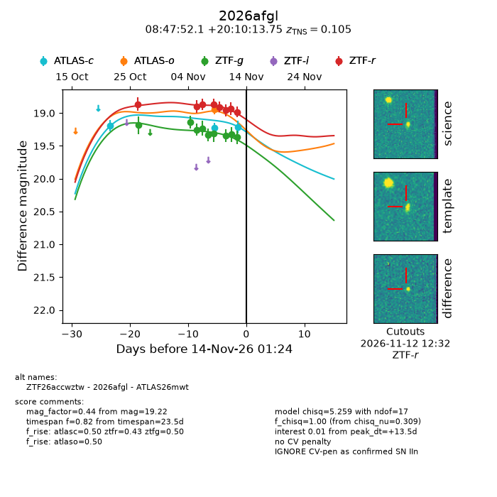
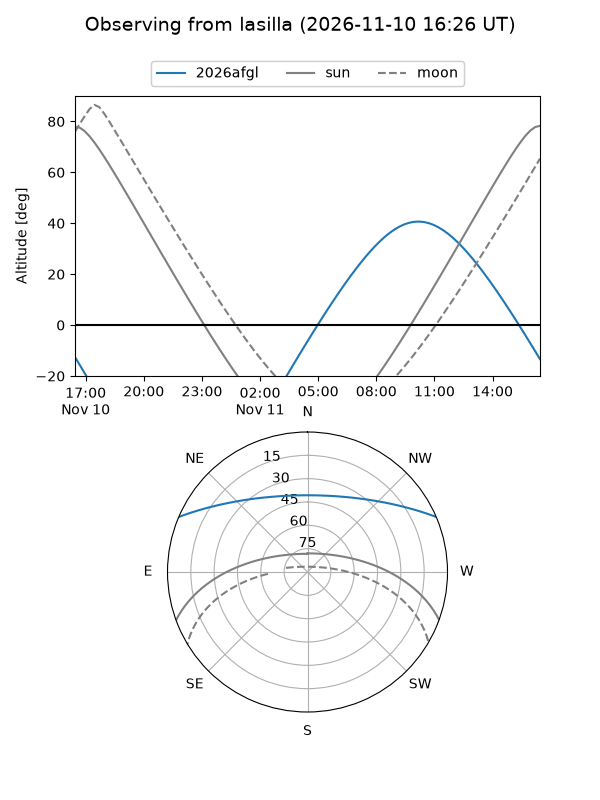
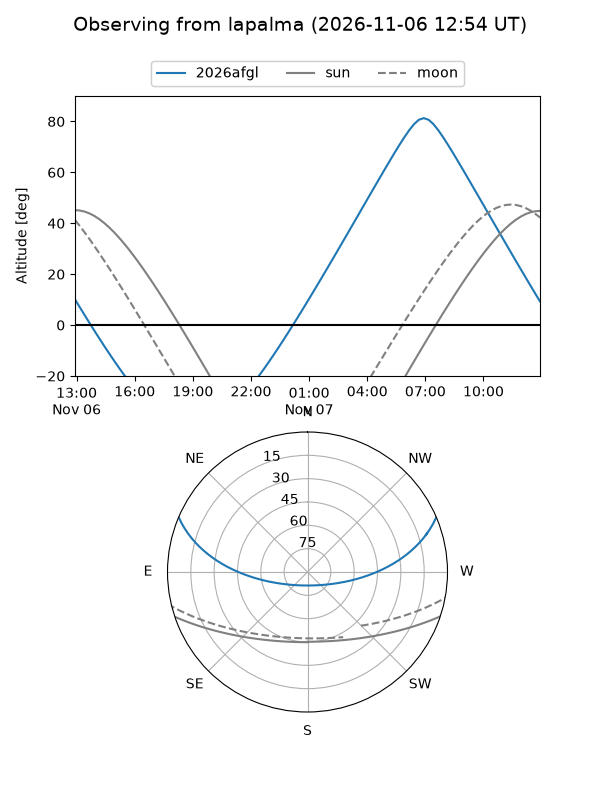
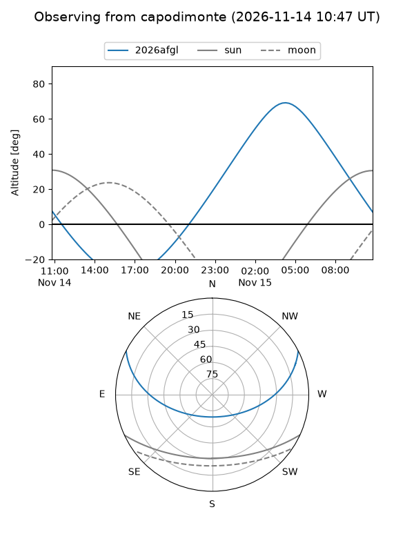
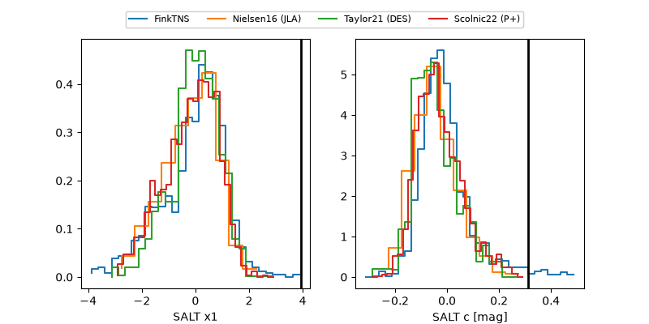

2026afgl
Target 2026afgl at 2026-11-14 01:25
Aliases and brokers:
FINK-ZTF: ztf.fink-portal.org/ZTF26accwztw
Lasair-ZTF: lasair-ztf.lsst.ac.uk/objects/ZTF26accwztw
ALeRCE-ZTF: alerce.online/object/ZTF26accwztw
YSE-PZ: ziggy.ucolick.org/yse/transient_detail/2026afgl
TNS name: wis-tns.org/object/2026afgl
Direct TNS query: direct search
alt names
ZTF26accwztw (ztf,fink_ztf)
2026afgl (tns,yse)
ATLAS26mwt (atlas)
Coordinates:
equatorial (ra, dec) = 131.9671,+20.17049
equatorial (HMS+DMS) = 08:47:52.10,+20:10:13.75
galactic (l, b) = (206.0715,+34.30612)
Flags:
TNS type: SN IIn
TNS redshift: 0.1050
peak dt: +13.5
Photometry:
last atlasc=19.22, atlaso=18.94, ztfg=19.37, ztfr=18.98
3 atlasc, 1 atlaso, 9 ztfg, 8 ztfr detections
Lightcurve

Visibility



Additional plots
